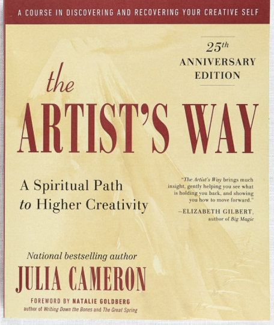

The Artist’s Way
Julia Cameron’s The Artist’s Way offers a framework for unlocking creativity through consistency, honesty, and removing self-censorship.
It is especially valuable because it treats creativity as a practice — not a rare lightning strike.
→ YouTube overview
→ Morning Pages
→ Photo references

Songwriting Philosophies
Some artists create through volume: writing hundreds of songs to find the strongest few. Think Ed Sheeran or Taylor Swift.
Others work with a more selective approach, like Billie Eilish and Finneas, focusing on fewer songs that deeply serve the project.
→ Ed Sheeran songwriting process
→ Taylor Swift songwriting process
→ Billie + Finneas process
Finishing Songs
Finishing songs is its own creative muscle.
Starting 1,000 ideas can feel exciting, but discipline is often what turns inspiration into actual work.
Perceived Competence
In music and creative work, perceived competence can sometimes seem more valuable than actual competence.
This can pressure artists to appear more polished, less sensitive, or less uncertain — even when sensitivity is the source of the art.
Protected Creative Time
One hour a week of dedicated, protected creative time can become a powerful anchor.
Creative Co-Working
Working alone, together.
Accountability without pressure. Presence without performance.
Solitude + The World
Solitude is sacred for many artists. It gives us space to hear ourselves clearly.
But creating in a vacuum can stifle creativity. Sometimes, to write our best songs or create our best work, we have to immerse ourselves in the world: sit on a bench in the park, wander through a museum, watch a film with a beautiful story, observe strangers, colors, sounds, weather, and movement.
Then we return inward — fueled with real material to create from.
Astrology + Synchronicity
Scorpio moon energy, astrological signs, synchronicities, and the soul’s path came up as ways artists interpret timing, intuition, and emotional depth.
Carl Jung + Rick Rubin
Carl Jung offers language for shadow, subconscious material, dreams, and integration.
Rick Rubin brings the focus back to intuition, simplicity, attention, and listening.
→ Rick Rubin interviews
→ Carl Jung overview
→ Photo references
Creativity as a way of life
We can take back control of our time, energy, and attention by weaving creativity into our way of life, no matter what that looks like.
Smart Phone = best friend and worst enemy
Phones/technology/overstimulation —> dsyregulated nervous system —> fight/flight/freeze/fawn & unable to be present and think clearly. Solution ideas: the brick, bePresent app, graying out apps on smart phone
Zodiac & Singer-Songwriter Sun Signs
A playful look at famous singer-songwriters through their sun signs — not archetypes, not vibes, just actual birthdays.
♈ Aries
Lady Gaga • Elton John • Aretha Franklin
♉ Taurus
Adele • Stevie Wonder • Sam Smith
♊ Gemini
Bob Dylan • Paul McCartney • Prince
♋ Cancer
Lana Del Rey • Joni Mitchell • H.E.R.
♌ Leo
Madonna • Mick Jagger • Kate Bush
♍ Virgo
Beyoncé • Fiona Apple • Freddie Mercury
♎ Libra
John Lennon • Paul Simon • Gwen Stefani
♏ Scorpio
Lorde • SZA • Neil Young
♐ Sagittarius
Taylor Swift • Billie Eilish • Jimi Hendrix
♑ Capricorn
David Bowie • Patti Smith • Dolly Parton
♒ Aquarius
Harry Styles • Shakira • Alicia Keys
♓ Pisces
Rihanna • Kurt Cobain • Olivia Rodrigo